Block 5, Bloor–Kipling
Mid-rise residential and public square · Toronto
A mid-rise residential block and its new public square in Bloor–Kipling, Toronto, shown in five short shots, from the wider neighborhood down to the details of the façade.
I first produced visuals of this project for a client while at Urbis Engineering, and reworked it in 2026. The Rhino model was rendered in D5, then ComfyUI filled each scene and added realism; the surrounding city was blocked out from real map data and left untextured for that pass. Each frame was retouched in Photoshop, animated from a single image in ComfyUI and graded in DaVinci Resolve.
Use the switch under each shot to compare the D5 render, the ComfyUI pass and the final frame.
- Project
- Client project at Urbis Engineering, reworked in 2026
- Location
- Bloor–Kipling, Toronto
- Typology
- Mid-rise residential and public square
- My role
- Modeling, rendering, AI workflow, retouching and color
- Modeling
- Rhino
- Rendering
- D5 Render
- AI
- ComfyUI: scene fill, realism, image-to-video animation
- Retouching
- Photoshop
- Color
- DaVinci Resolve
- Context
- Blocked out from real map data
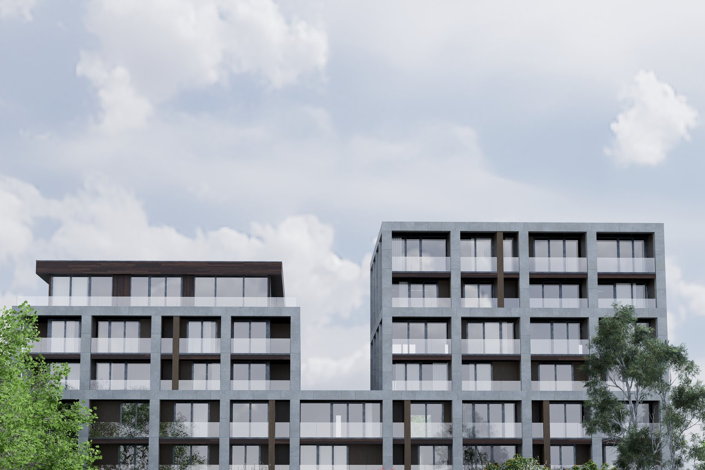
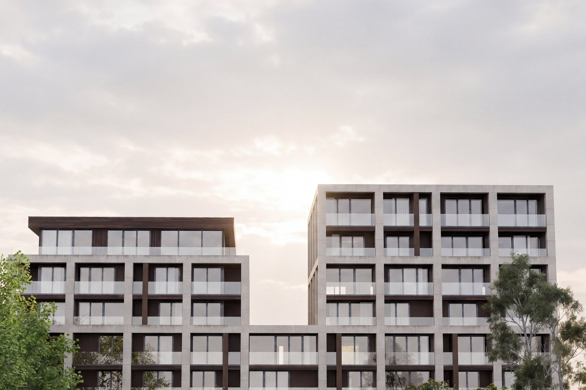
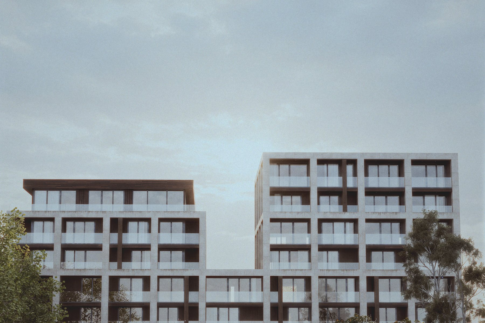
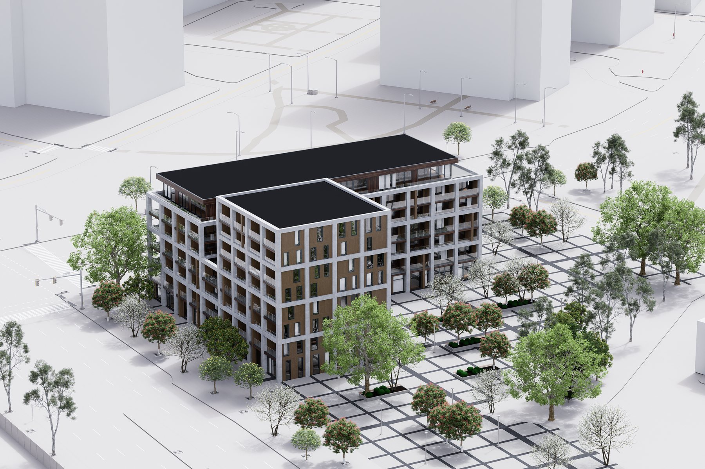
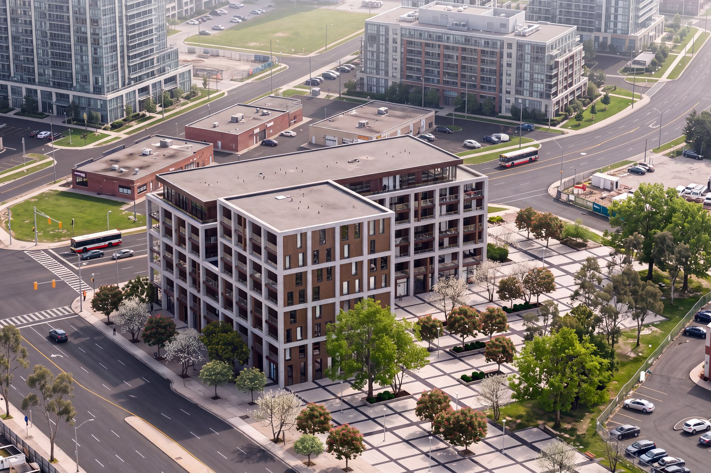
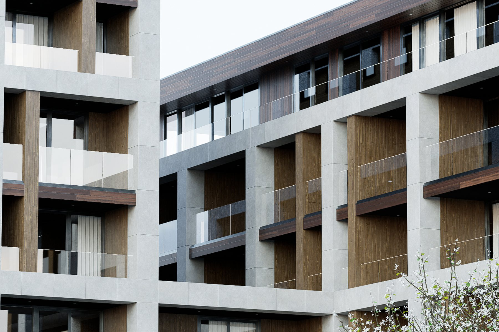
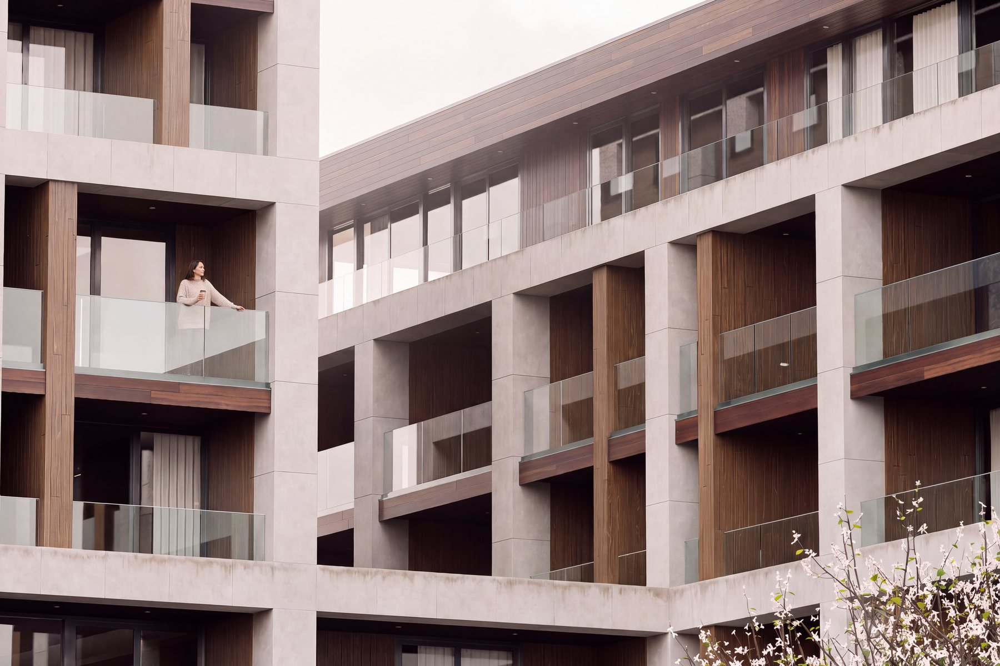
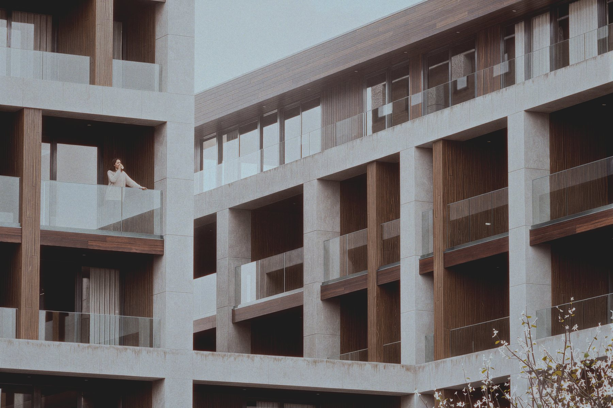
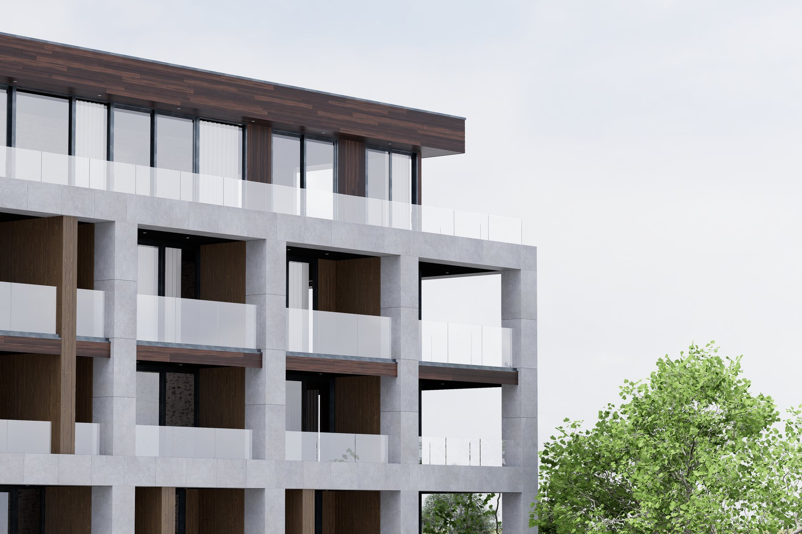
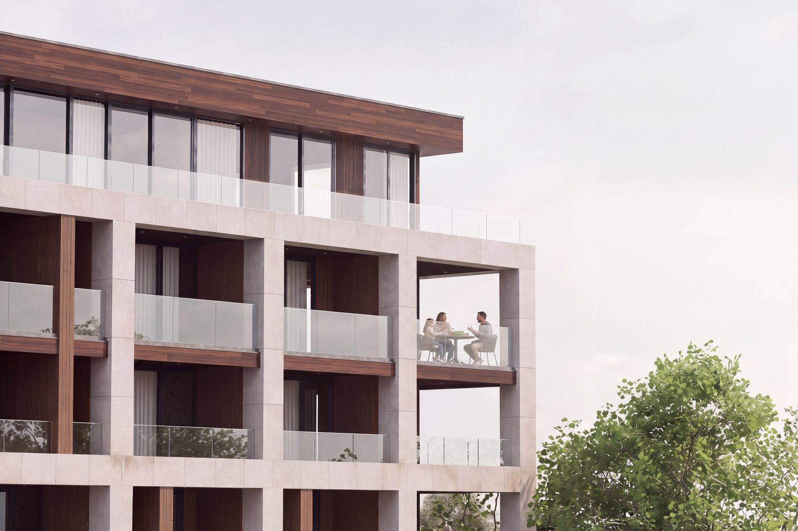
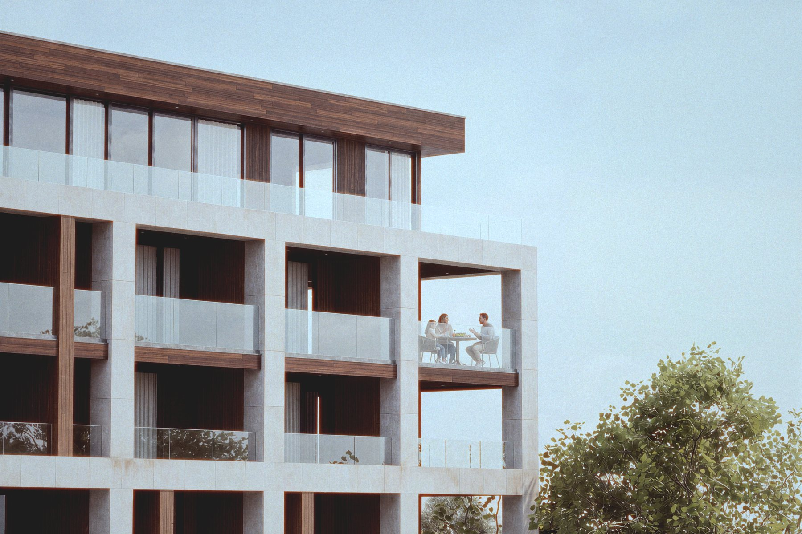
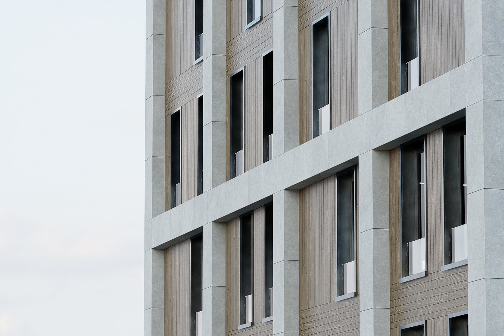
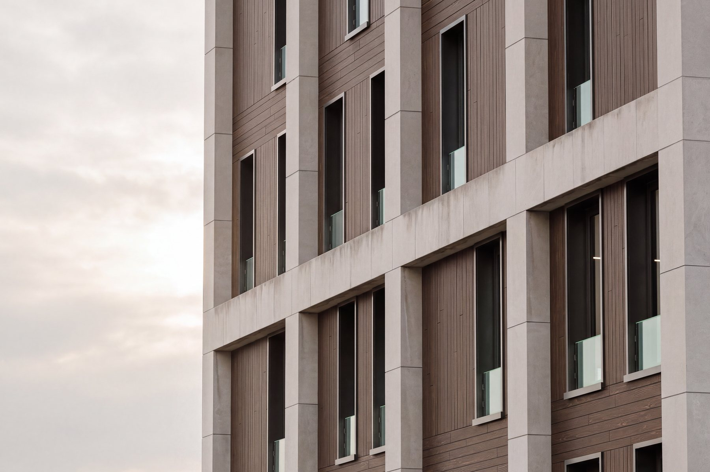
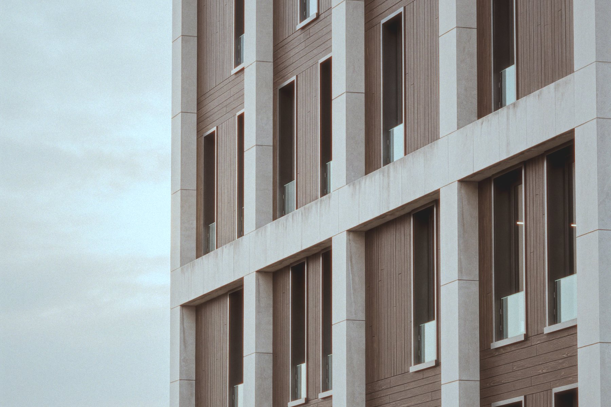